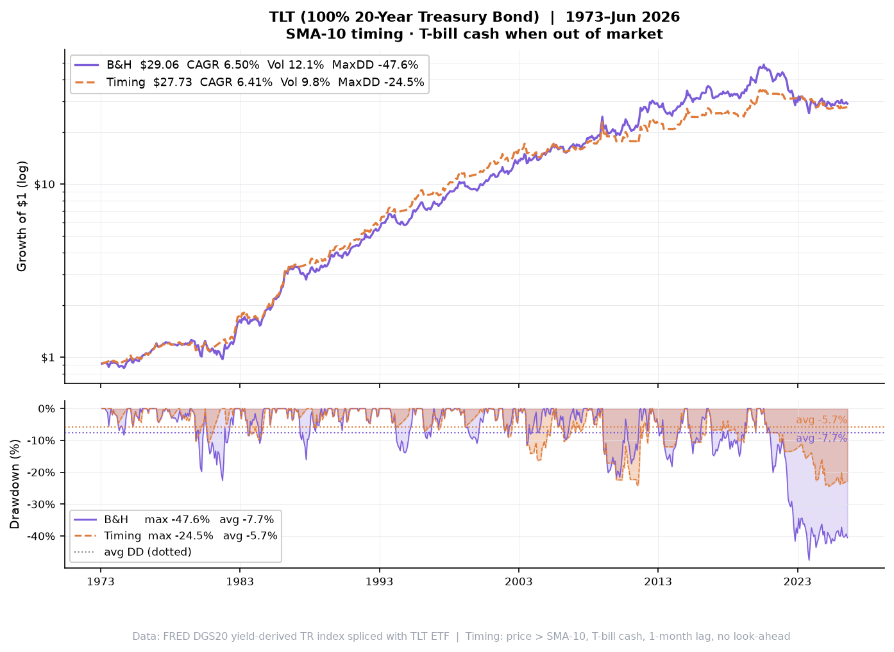
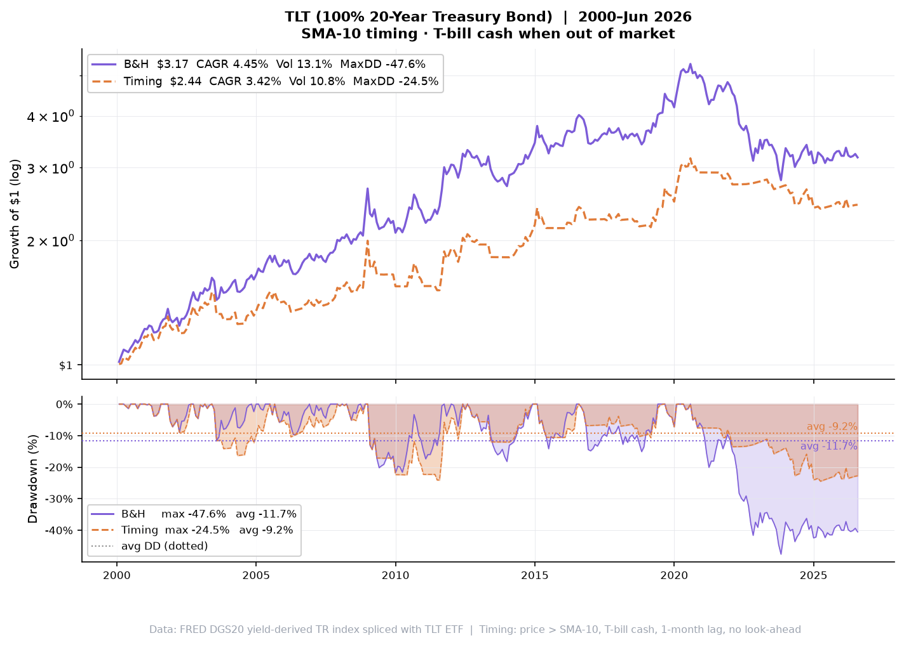

100% 20-year US Treasury bond total return · no diversification · benchmark for portfolio comparisons
| Strategy | CAGR | Volatility | Sharpe | Max DD | Avg DD | Ulcer | $1 → |
|---|---|---|---|---|---|---|---|
| Buy & Hold | +6.50% | 12.06% | 0.582 | -47.61% | -7.70% | 13.08 | $29.06 |
| Timing SMA-10 | +6.41% | 9.84% | 0.680 | -24.47% | -5.73% | 8.54 | $27.73 |
| Strategy | CAGR | Volatility | Sharpe | Max DD | Avg DD | Ulcer | $1 → |
|---|---|---|---|---|---|---|---|
| Buy & Hold | +4.45% | 13.08% | 0.397 | -47.61% | -11.70% | 17.60 | $3.17 |
| Timing SMA-10 | +3.42% | 10.76% | 0.365 | -24.47% | -9.25% | 11.62 | $2.44 |
$1 invested · log scale (top) · drawdown + avg DD lines (bottom) · B&H $29.06 | Timing $27.73

$1 invested · log scale (top) · drawdown + avg DD lines (bottom) · B&H $3.17 | Timing $2.44

Timing rule: At each month-end compare TLT price to its 10-month SMA. Price > SMA → invested in TLT. Price ≤ SMA → exit to T-bills. Signal at close of month t−1, applied to return of month t (1-month lag, no look-ahead).
Warm-up & base date: SMA seeded using monthly prices from Jan 1963. For the 1973 study, the first return (Jan 1973) uses the Dec 1972 → Jan 1973 price change — no return discarded.
Bond return model: FRED DGS20 yield-derived total return with yield-dependent modified duration and convexity correction. Spliced with TLT ETF at its 2002 launch.
Cash: FRED TB3MS 3-month T-bill (1934–). Spliced with BIL ETF from 2007.
No transaction costs, taxes or leverage.